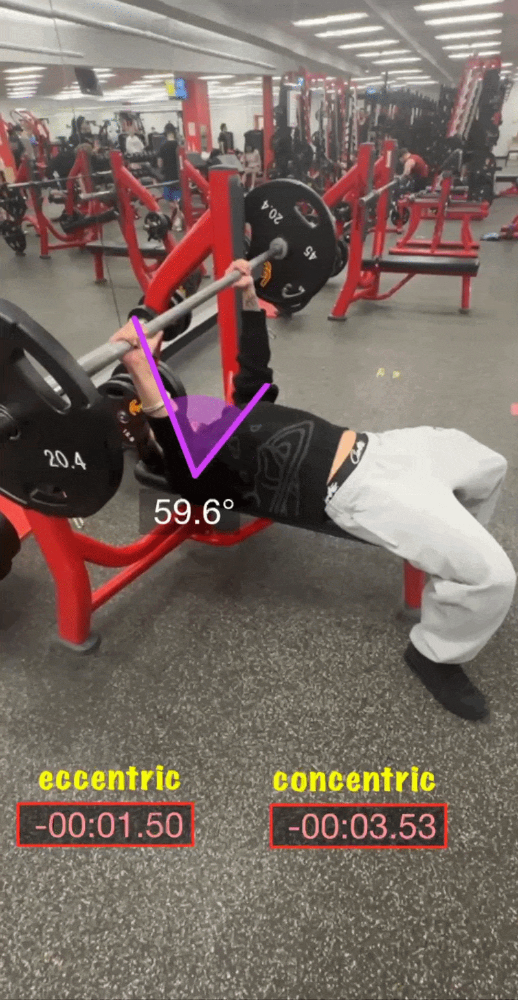

Video Analysis Using Dartfish Express

Dartfish Analysis
I used the Express version of Dartfish for the first time to analyze a bench press movement pattern. This was my first experience working with the software, so part of the process involved learning how to navigate the tools and apply them to a real lift. I added visual annotations to the video, including an elbow angle measurement and timers for the eccentric and concentric portions of the lift.
Using the video, I analyzed joint positioning and the sequencing of the bench press across different phases of the repetition. The angle overlay helped me look more closely at elbow position at a key point in the lift, while the eccentric and concentric timers helped break down the tempo and control of the movement. In addition to learning the analysis side of Dartfish, I also had to figure out how to upload the final clip to my GitHub website by converting it into a GIF and embedding it into the site. This project helped me build both movement analysis skills and basic web design skills.